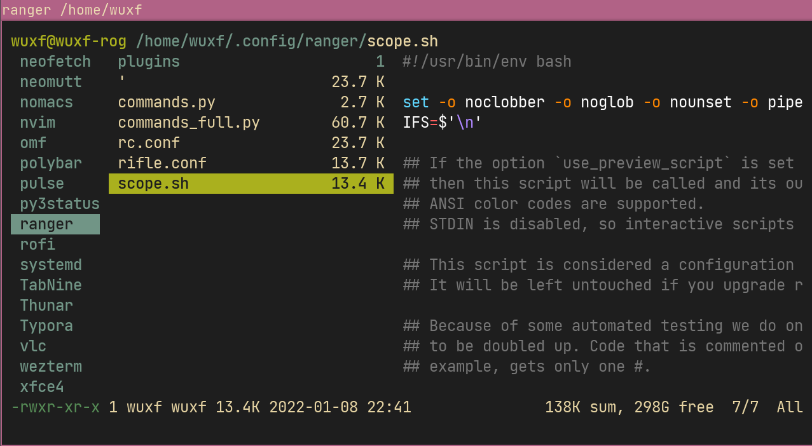

Ranger
ranger 是一个用 Python 编写的基于终端的文件管理器,使用 vim 的操作方式. 
安装
安装 ranger 包,以 Arch 为例：
|
|
使用
| 快捷键 | 命令 |
|---|---|
| ? | 帮助 |
| l,Enter | 打开文件 |
| j,k | 在文件列表中上下移动 |
| h,l | 在上一级和下一级目录间移动 |
| blank | 选中文件 |
| q | 退出 |
如果您熟悉 vim，那么应该熟悉 ranger 的 UI 规范。Ranger 使用 HJKL 键进行导航，并从 vim 借鉴了许多习惯用法。例如:yy (vim 中的复制行)复制一个文件，pp 粘贴它，dd 剪切文件。更复杂的函数可以从命令行调用:(冒号)。
配置
生成配置文件
第一次运行 ranger,会创建~/.config/ranger文件夹,如果要自定义 ranger 的配置,你首先需要在你的～/.config 文件夹中生成 ranger 的配置文件.
ranger 使用 4 个主要的配置文件:
|
|
- rc.conf - 选项设置和快捷键
- commands.py - 能通过 : 执行的命令
- rifle.conf - 指定不同类型的文件的默认打开程序。
- scope.sh - 文件预览相关配置